15 Years with My
Ideal Grandfather
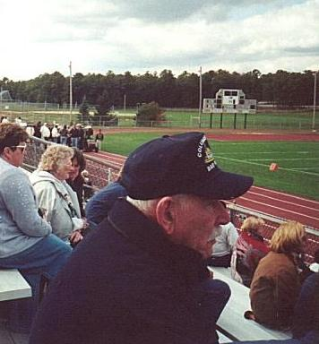
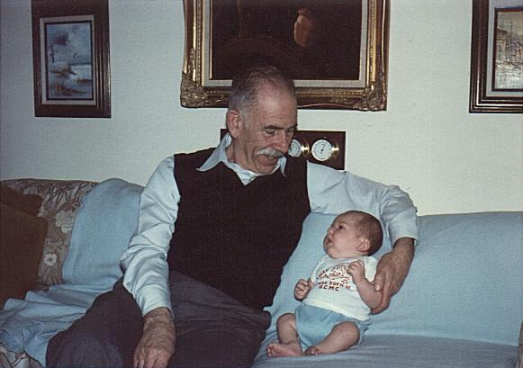
I first met my grandfather in March of 1986. Even back
then I was listening when he gave me advice. I didn't
understand it, but I listened.
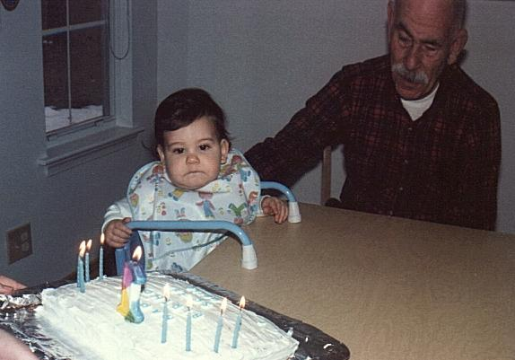
On my first birthday, my grandfather was there to make
sure I knew the difference between the cake and the
candles. Everything looked good to me.
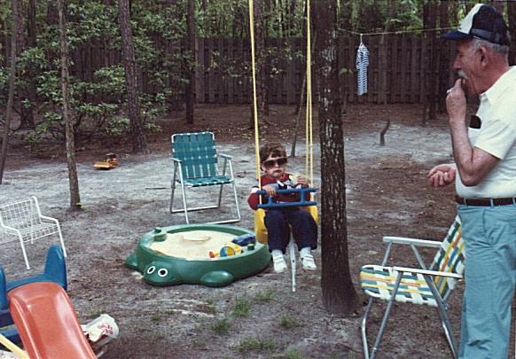
When I was two, my grandfather made sure that I got a
taste of the good life. It was a great time to be 2.
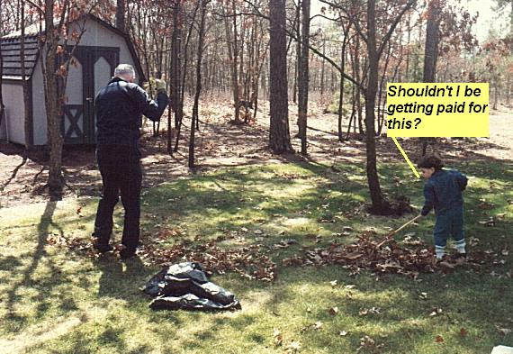
When I turned three, my grandfather introduced me to
the world of work. Something I would have to get used
to from this point on.
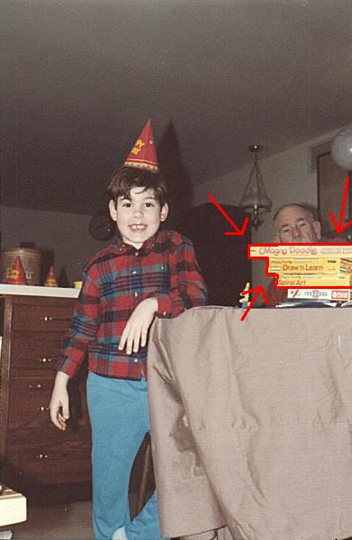
When I turned four, my grandfather must have thought
that I had some sort of artistic talent. Beats me...
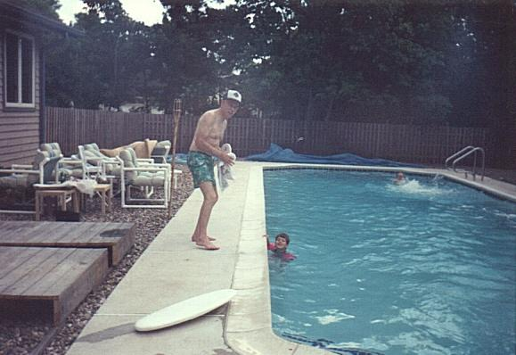
When I was five, my grandfather taught me how to swim.
I am thankful for that.
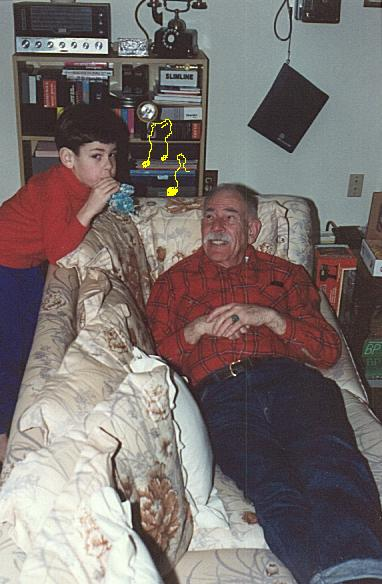
He also introduced me to (and somehow tolerated) my
musical side.
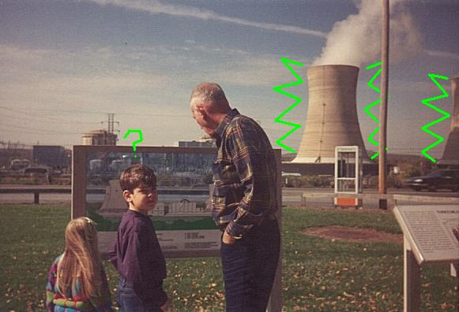
When I was six, my grandfather (who is a history buff)
decided to show me the world. Our first destination was
Three Mile Island. My foot still glows...
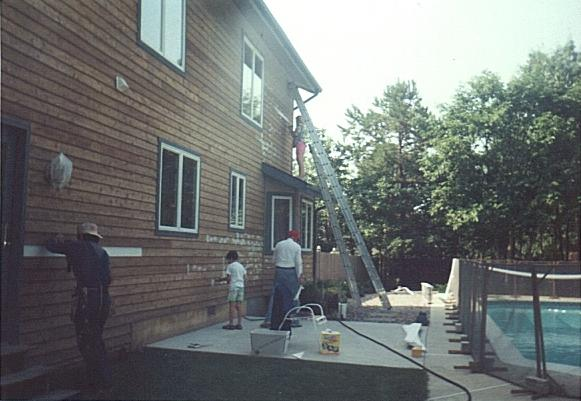
When I was seven, I spent the entire summer helping my
grandfather paint his huge house. I was never so glad to
get back to school.
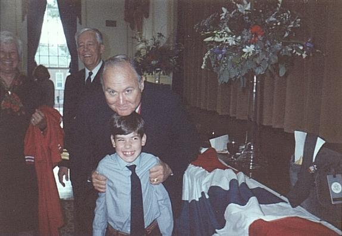
When I was eight, I discovered that my grandfather knew
some pretty important people. I got to meet General
Swartzkopf, the general in charge of the Gulf War. The
admiral of the Valley Forge Military Academy is standing
right behind.
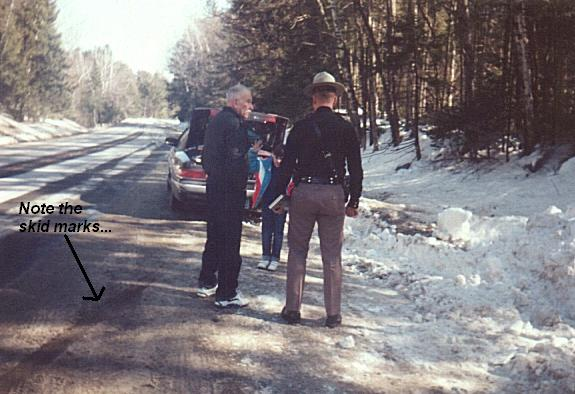
I also got to meet a really nice state trooper in New
Hampshire when my grandfather decided to take us off-road
on a ski slope. Funny, I didn't know a Grand Marquis was
an off-road vehicle...
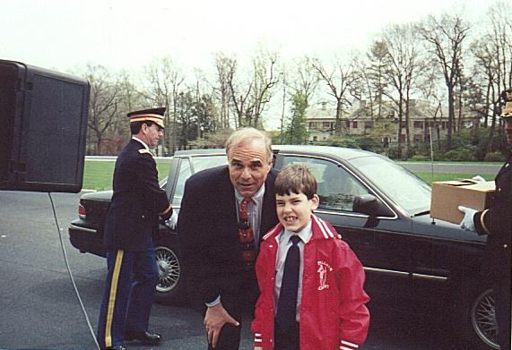
I also got to meet the mayor of Philadelphia, Ed Rendell.
His car had a lot of cool stuff.
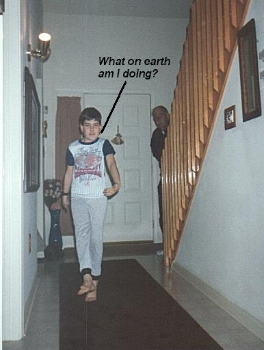
When I was nine, my grandfather tried to get me to be a
star athlete. Unfortunately, I had no athletic abilities.
Actually, I still don't.
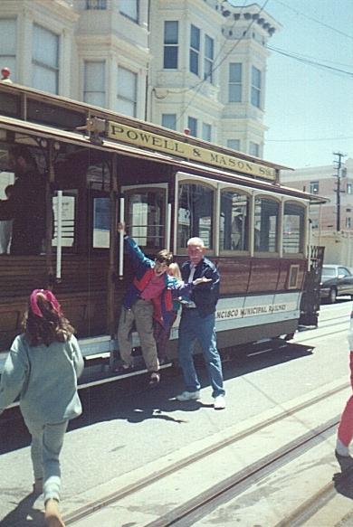
By the time I was 10, my grandfather and I had traveled
through most of the lower 48 to make it to San Francisco.
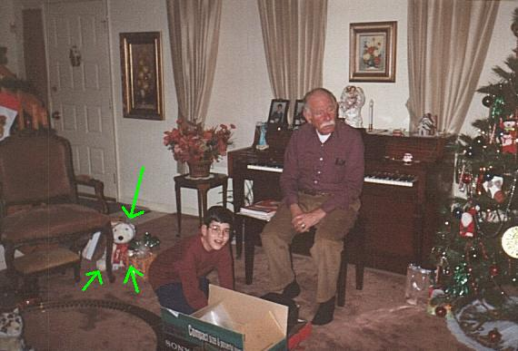
When I was 11, my grandfather finally admitted that my
musical talents were pretty good. He got me a cool CD player
and that lovely stuffed bear behind me.
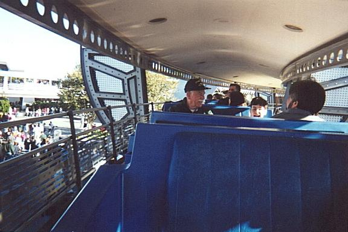
When I was 12, my grandfather went with me on the thrilling,
chilling, and very scary... um... monorail.
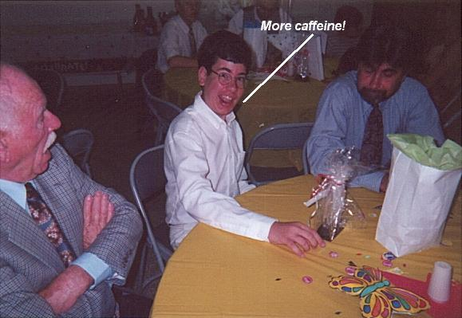
When I was 13, my grandfather was there when I graduated 8th
grade. Somehow, I did it the first time around.
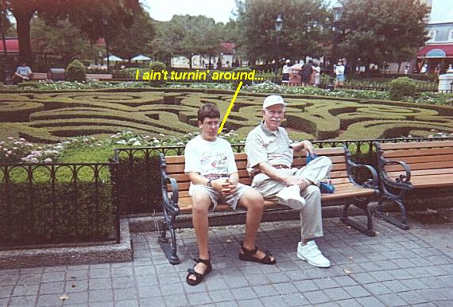
When I was 14, my journeys with my grandfather still
continued. We had been traveling for 10 years now. Note my
displeasure at having to turn around to look at the shrub maze...
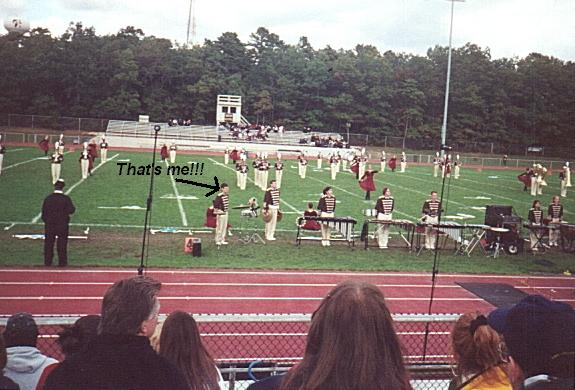
Now that I am 15, my grandfather is still there encouraging me
whenever he can. As he sits and watches me, a percussionist in
the Absegami Marching Band, I wonder if he remembers when I was
four and I first showed him my musical talent at my birthday party.
I hope there are many more years to enjoy with my ideal grandfather.